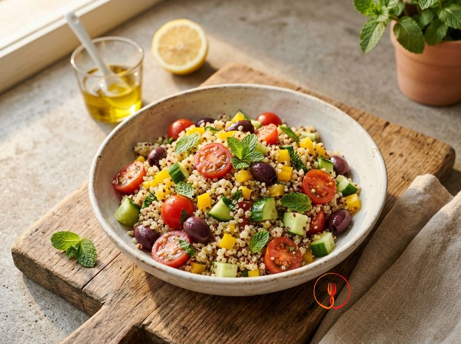

Insalata di quinoa
Fresca insalata estiva con verdure croccanti.
Ingredienti
- Quinoa bianca o mista200 gr
- Pomodorini ciliegino200 gr
- Cetriolo250 gr
- Peperone giallo200 gr
- Olive taggiasche o greche denocciolate50 gr
- Menta fresca (foglie)5 gr
- Succo di limone40 ml
- Olio extravergine d'oliva45 ml
- Sale fino6 gr
- Scorza di limone non trattato1 pezzo
Allergeni
Nessuno dei 14 allergeni principali tra gli ingredienti.
Procedimento
- Sciacquare accuratamente la quinoa sotto acqua corrente fredda utilizzando un colino a maglie fitte per eliminare le saponine amare.
- Tostare la quinoa in una pentola per 2 minuti a fuoco medio, quindi aggiungere 400 ml di acqua leggermente salata e portare a bollore.
- Ridurre la fiamma, coprire e cuocere per circa 12-15 minuti, finché l'acqua non viene assorbita e compare il caratteristico germoglio a spirale.
- Sgranare la quinoa con una forchetta e stenderla su una teglia ampia per accelerare il raffreddamento a temperatura ambiente.
- Lavare e tagliare i pomodorini in quarti, il cetriolo (privato dei semi) e il peperone a cubetti regolari di circa 0.5 cm.
- Preparare un'emulsione (citronette) agitando energicamente in un barattolo l'olio extravergine, il succo di limone, il sale e la scorza grattugiata.
- In una ciotola capiente, unire la quinoa fredda, le verdure tagliate e le olive tagliate a rondelle.
- Condire l'insalata con l'emulsione e aggiungere le foglie di menta spezzettate a mano per preservarne l'aroma.
- Mescolare con cura e lasciar riposare in frigorifero per almeno 30 minuti prima di servire per permettere l'armonizzazione dei sapori.
Valori nutrizionali (stima)
| Per porzione (340 g) | Per 100 g | |
|---|---|---|
| Energia | 1289 kJ / 308 kcal | 379 kJ / 91 kcal |
| Proteine | 7.9 g | 2.3 g |
| Carboidrati | 33 g | 9.7 g |
| di cui zuccheri | 4.3 g | 1.3 g |
| Grassi | 15 g | 4.4 g |
| di cui saturi | 2.0 g | 0.6 g |
| Fibre | 5.8 g | 1.7 g |
| Sale | 1.5 g | 0.44 g |
Valori stimati con l'AI su dati medi CREA / USDA: sono indicativi e non sostituiscono il parere di un medico o di un nutrizionista.
Apri la ricetta nell'app per la lista della spesa, le schede ingredienti e i negozi vicini.